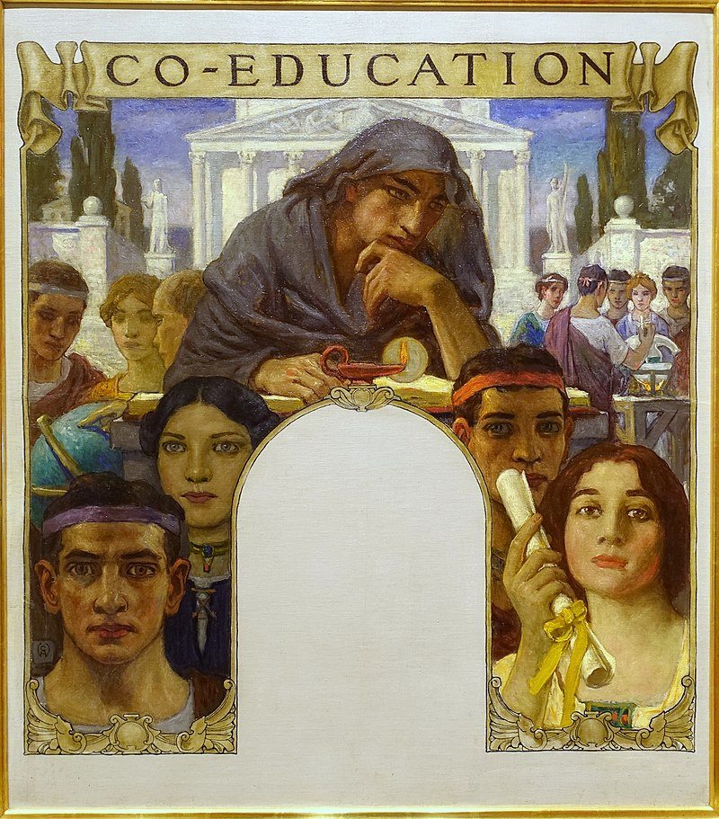
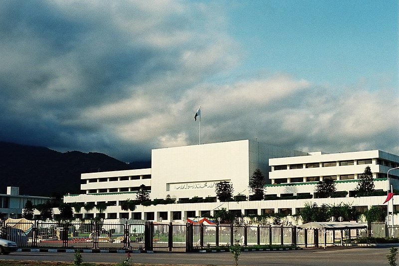
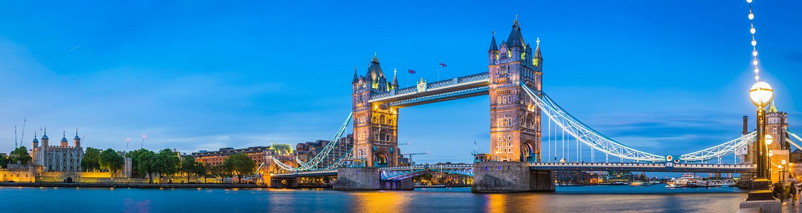
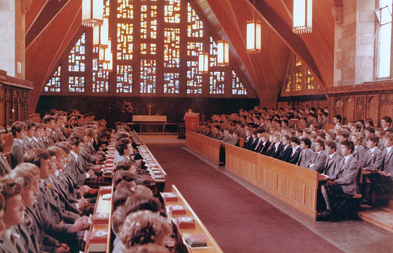
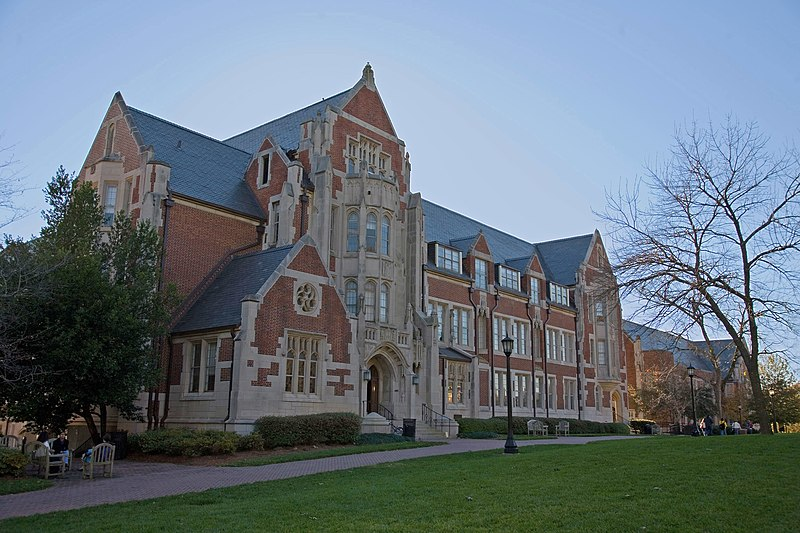
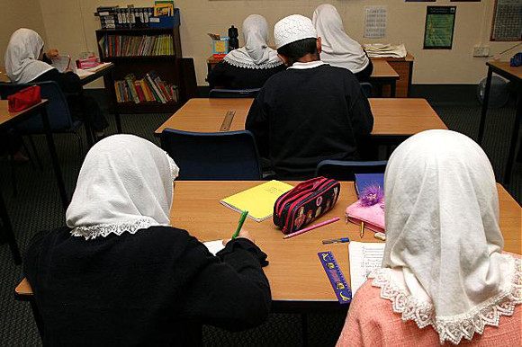

Mixed-sex education
Mixed-sex education, also known as mixed-gender education, co-education, or coeducation (abbreviated to
co-ed or coed), is a system of education where males and females are educated together. Whereas single-sex
education was more common up to the 19th century, mixed-sex education has since become standard in many
cultures, particularly in Western countries. Single-sex education remains prevalent in many Muslim countries.
The relative merits of both systems have been the subject of debate.

The world's oldest co-educational school is thought to be Archbishop Tenison's Church of England High School,
Croydon, established in 1714 in the United Kingdom, which admitted boys and girls from its opening onwards
[1] This has always been a day school only.
The world's oldest co-educational both day and boarding school is Dollar Academy, a junior and senior school for
males and females from ages 5 to 18 in Scotland, United Kingdom. From its opening in 1818, the school admitted
both boys and girls of the parish of Dollar and the surrounding area. The school continues in existence to the
present day with around 1,250 pupils.[2]
The first co-educational college to be founded was Oberlin Collegiate Institute in Oberlin, Ohio. It opened on
3 December 1833, with 44 students, including 29 men and 15 women. Fully equal status for women did not arrive
until 1837, and the first three women to graduate with bachelor's degrees did so in 1840.[3] By the late 20th
century, many institutions of higher learning
that had been exclusively for men or women had become coeducational.

co-educationa in Pakistan
Pakistan is one of the many Muslim countries where most schools and colleges are single-gender although some schools and colleges, and most
universities are coeducational. In schools that offer O levels and A levels, co-education is quite prevalent. After the independence of Pakistan in 1947, most
universities were coeducational but the proportion of women was less than 5%. After the Islamization policies in the early 1980s, the government
established Women's colleges and Women's universities to promote education among women who were hesitant to study in mixed-sex environment.
Today, however, most universities and a large number of schools in urban areas are co-educational.

co-educationa in United Kingdom
In the United Kingdom the official term is mixed,[12] and today most schools are mixed. A number of Quaker co-educational boarding schools were established before the 19th century.
The world's oldest co-educational school is thought to be Archbishop Tenison's Church of England High School, Croydon, established in 1714 in the United Kingdom, which admitted 10 boys and 10 girls
from its opening, and remained co-educational thereafter.[1] This is a day school only and still in existence.
The Scottish Dollar Academy was the first mixed-sex both day and boarding school in the UK. Founded in 1818, it is the oldest both boarding and day
mixed-sex educational institution in the world still in existence. In England, the first non-Quaker mixed-sex public boarding school was Bedales School,
founded in 1893 by John Haden Badley and becoming mixed in 1898. Ruckleigh School in Solihull was founded by Cathleen Cartland in 1909 as a non-denominational co-educational preparatory school many decades before others followed. Many previously single-sex schools have begun to accept both sexes in the past few decades: for example, Clifton College began to accept girls in 1987.

Single-sex education
Single-sex education, also known as single-gender education and gender-isolated education, is the practice of conducting education with male and female students attending separate classes, perhaps in separate buildings or schools.
The practice of single-sex schooling was common before the 20th century, particularly in secondary and higher education. Single-sex education is practiced in many parts of the world based on tradition and religion; recently, there has been
a surge of interest and the establishment of single-sex schools due to educational research.[1] Single-sex education is
most popular in English-speaking countries (regions) such as Singapore, Malaysia, Ireland,[2] the United Kingdom, Hong Kong, South Africa and Australia; also in Chile, Israel, South Korea and in
many Muslim majority countries.[3] In the Western world, single-sex education is primarily associated with the private sector, with the public (state) sector being overwhelmingly mixed sex; while in the Muslim world public schools and private schools are sex-segregated
.Motivations for single-sex education range from religious ideas of sex segregation to beliefs that the sexes learn and behave differently. As such, they thrive in a single-sex environment. In the 19th century, in Western countries
single-sex girls' finishing schools, and women's colleges offered women a chance of education
at a time when they were denied access to mainstream educational institutions. The former was especially common in Switzerland, the latter in the U.S. and the U.K., pioneers in women's education.

Women's colleges in the United States
Women's colleges in the United States are private single-sex U.S. institutions of higher education that only
admit female students. They are often liberal arts colleges. There were approximately 26 active women's colleges
in the United States in 2022, down from a peak of 281 such colleges in the 1960s

Co-Education Concept in Islam | Is Co-Education Allowed?
This section deeply explains what Islam says about mix-sex education. Here I will discuss what Islam says about education and mix-gender education at the same institute. It will all depend upon you, what you will understand and make practice on this.
First of all, you should understand the Shareeha(الشريعة) of Islam. Sharia is an Islamic religious law that governs day-to-day life. Islamic Sharia is derived from four sources: Quran, Sunnah
Qiyas(Analogical reason), and Ijma(Consensus of ulama). A man who follows the rules of Islamic Sharia is called a Muslim. I will drive a result on Co-Education from the Islamic Sharia.
It is not a new philosophy, since in Islam women prayed Namaz in Masjid, Participate in Ijtimah, go out to work.Allah says:
“And when ye ask of them (the wives of the Prophet) anything, ask it of them from behind a curtain. That is purer for your hearts and for their hearts.” [Surah-al-Ahzab:53].
Boys in co-education see girls without any hesitation and start to gaze at them whenever they saw any girl. Allah says: “Say to the believing women that: they should cast down their glances and guard their private parts (by being chaste)…”
“…and not display their beauty except what is apparent, and they should place their khumur over their bosoms…”“O Prophet! Say to your wives, your daughters, and the women of the believers that: they should let down upon themselves their jalabib.” [Surah Ahzab Ayat No. 60]
Stop and think that if you are not allowed to talk with the most pious and modest woman called Ummul Mohmineen, then how other females are allowed to interact freely with males.
It means a Hijab is necessary for females. So, here is the first thing we have found the Hijab is necessary for females to interact and communicate with other genders.Our beloved Holy Prophet HAZRAT MUHAMMAD (P.B.U.H) never encourages these types of activities.
The Prophet (P.B.U.H) Said:
“Haya does not bring anything except good.”
Hazrat Muhammad (P.B.U.H) once saw men and women mixing together on the road upon their departure from the mosque. He said to the women. ”Hold back a bit. You do not have to walk in the middle of the road. You may keep to the side”.[Sunan-abi-Dawod].
Some people say that free mixing is not permitted in Islam, but they have to define and explain in the light of Islamic Shareeha how they are using it to apply. The concept of Halal or Haram, Mahram or Non’mahram, Fitnah, Modesty or immodesty. The thing in which they are going against the rules, means they are opposing the Islamic Shareeha.
Islam says if you look accidentally at a woman return your eyes, and the second look is haramfor you.
Co-education is not allowed in Islam if you violate the Islamic rules ( الشريعة), but if students and institutes follow the Islamic guidelines regarding the law of Hijab and Haya then, in this perspective coeducation/mix-gender education is permissible in Islam.

Webdeveloper: Abul hassan Masood
+923156623046
masoodurrehmaan@gmail.com